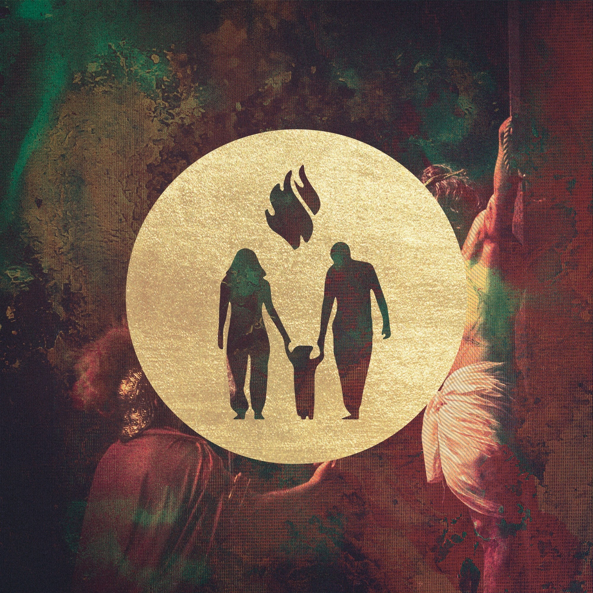

<div *ngIf="showslapsh" class="loading">
  <div class="loading__contenido">
    
    <!--  -->
    </div>
</div>

<ion-app>
 
  <ion-split-pane when="md" contentId="principal">
        <ion-menu side="start" menuId="primerMenu" contentId="principal">
              
        <ion-content>
            <ion-menu-toggle autoHide="false">
              <ion-item href="inicio"><ion-icon name="star" slot="start"></ion-icon>Inicio</ion-item>
              <ion-item href="staff"><ion-icon name="star" slot="start"></ion-icon>Staff</ion-item>
              <ion-item href="ministerios"><ion-icon name="star" slot="start" ></ion-icon>Ministerios</ion-item>
              <ion-item href="iglesiashijas"><ion-icon name="star" slot="start"></ion-icon>Iglesias Hijas</ion-item>
              <ion-item href="calendario"><ion-icon name="star" slot="start"></ion-icon>Calendario</ion-item>
              <ion-item href="gruposcafe"><ion-icon name="star" slot="start"></ion-icon>Grupos C.A.F.E.</ion-item>
              <ion-item href="http://maps.google.com/maps?f=q&q=-17.7706416,-63.1753162&z=17"><ion-icon name="star" slot="start"></ion-icon>Ubicacion</ion-item>
              <ion-item href="radioamerica"><ion-icon name="star" slot="start"></ion-icon>Radio America</ion-item>
            </ion-menu-toggle>

            <div style="text-align: center;">

              <ion-item lines="full" (click)="openFacebook('iifamilia', 'https://www.facebook.com/iifamilia/')">
                <ion-icon name="logo-facebook" slot="start" color="secondary"></ion-icon>
                Follow us on Facebook
              </ion-item>
          
              <ion-item lines="full" (click)="openYoutube('UC7gncJVqJQtHkQb4duQh4FA')">
                <ion-icon name="logo-youtube" slot="start" color="danger"></ion-icon>
                Subscribe us on Youtube
              </ion-item>
          
              <ion-item lines="full" (click)="openInstagram('iifamilia')">
                <ion-icon name="logo-instagram" slot="start" color="warning"></ion-icon>
                Follow us on Instagram
              </ion-item>
          
            </div>
        </ion-content>
    </ion-menu>
    <ion-router-outlet id="principal" [hidden]="routerHidden"></ion-router-outlet>
  </ion-split-pane>
</ion-app>
